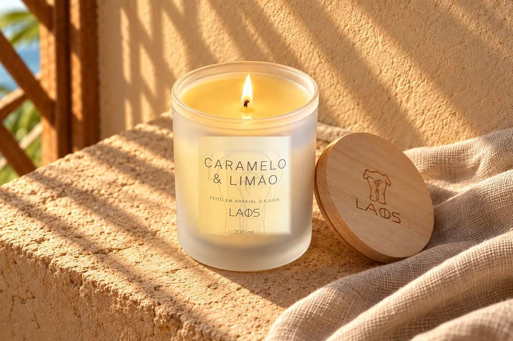

Guia · Velas
Primeira queima da vela
Como acender, quanto tempo deixar acesa, como apagar e quando parar, para a sua vela queimar por igual até o fim.

A primeira vez que você acende uma vela decide como ela vai queimar até o fim. Não é exagero: a cera guarda a forma do primeiro derretimento. Se a poça de cera líquida chegar até a borda do pote logo no começo, as próximas queimas seguem o mesmo caminho. Se ficar só no meio, a vela começa a cavar um buraco em volta do pavio. Aqui está o passo a passo que usamos com as velas da LAOS.
Antes de acender
- Escolha o lugar. Uma superfície plana, firme e resistente ao calor, longe de cortinas, papéis, tecidos e correntes de ar. Janela aberta e ventilador ligado fazem a chama dançar, e a vela queima torta.
- Apare o pavio. Deixe o pavio com cerca de 0,5 a 1 cm antes de acender. Pavio comprido faz chama alta e solta fuligem no vidro.
- Tire a tampa e deixe por perto. Ela só volta para o pote depois que a vela apagar e esfriar.
Precisa de fogo? Temos fósforos para acompanhar as suas velas.
A primeira queima: de borda a borda
Na primeira vez, escolha um momento em que você possa ficar por perto e deixe a vela acesa até a cera derreter de borda a borda do pote. Quando a superfície inteira estiver líquida, pode apagar. Pronto: a vela aprendeu o caminho.
A regra da casa vale desde o primeiro dia: no máximo 2 horas acesa de cada vez. Se, nesse tempo, a cera ainda não tiver chegado à borda, apague, deixe esfriar e, na próxima vez, dê a ela de novo o tempo que você puder, sempre dentro das 2 horas. Queimas longas o bastante para derreter a superfície inteira evitam o túnel.
O que é o túnel e como evitar
Túnel é quando a vela queima só no centro e deixa uma parede de cera intacta nas laterais. O aroma fica mais tímido, o pavio vai afundando e boa parte da cera nunca é usada. Ele aparece quando a vela é acesa por pouco tempo, várias vezes seguidas: dez minutos aqui, quinze ali.
- Acenda quando for ficar com a vela acesa por um tempo, não só de passagem.
- Antes de apagar, confira se a superfície derreteu até a borda.
- Se o túnel já começou, dê à vela queimas mais longas nas próximas vezes, dentro das 2 horas, para a cera ir se nivelando.
- Se o pavio afundar a ponto de afogar na cera, apague, deixe esfriar e fale com a nossa equipe pelo WhatsApp antes de acender de novo.
Cuidados com o pavio a cada uso
Antes de cada acendimento, apare o pavio para cerca de 0,5 a 1 cm, com a vela fria. Retire da cera qualquer pedacinho de pavio queimado ou fósforo que tenha caído. Se, com a vela acesa, a chama ficar alta demais ou começar a soltar fumaça escura, apague, espere esfriar e apare o pavio antes de acender de novo.
Como apagar
O jeito mais limpo é com um abafador: a chama se apaga sem espalhar fumaça. Sem abafador, incline o pavio com cuidado para dentro da cera derretida, usando um palito ou uma pinça, e endireite logo em seguida, ainda com a cera líquida, para ele ficar em pé para a próxima vez.
Evite soprar: o sopro pode espalhar fuligem e respingar cera quente. E só coloque a tampa depois que a vela esfriar por completo.
Quanto tempo a vela dura
O tempo de queima muda de vela para vela, e a LAOS informa na página de cada produto quando tem esse dado. Alguns exemplos do que está declarado:
| Vela | Tamanho | Tempo de queima informado |
|---|---|---|
| Vela Energy (Linha Clean) | 200 ml | aproximadamente 60 horas |
| Vela Arraial d'Ajuda | 110 ml | aproximadamente 35 horas |
| Velas Mãe Terra, como a Vela Maracujá | 40 ml | aproximadamente 8 a 10 horas |
São estimativas informadas pela LAOS para cada produto. Queimar sempre de borda a borda, sem túnel, e manter o pavio aparado ajuda a vela a usar toda a cera.
Quando parar
Pare de usar quando restar cerca de 1 cm de cera no fundo do pote. Abaixo disso, o calor da chama fica perto demais do vidro e da base, e o pote pode esquentar em excesso.
Muitas das nossas velas vêm em pote reutilizável. Depois do fim, com o pote frio, retire o restinho de cera, lave com água morna e sabão e seque bem. Ele pode guardar algodão, clipes, pincéis ou virar vasinho.
Velas com cristais: retire as pedras
Algumas velas da nossa linha Esotérica acompanham pedras, como a Vela Quartzo Verde, a Vela Olho de Tigre e a Vela 7 Chakras. As pedras fazem parte da inspiração e da apresentação da vela, e não devem queimar junto com ela.
- Antes de acender, retire as pedras que estiverem sobre a cera.
- Se alguma pedra aparecer à medida que a cera derrete, apague a vela e retire a pedra com uma pinça ou colher, sem encostar os dedos na cera quente.
- Uma pedra perto do pavio pode desviar a chama e aquecer o vidro num ponto só. Na dúvida, apague antes de mexer.
Depois de limpas, as pedras ficam com você.
Segurança, sempre
- Nunca deixe a vela acesa sem alguém por perto, nem ao sair de casa ou ao dormir.
- Mantenha fora do alcance de crianças e animais.
- Não mova nem toque no vidro com a vela acesa ou com a cera ainda líquida.
- Deixe espaço entre uma vela e outra, e mantenha longe de aromatizadores e sprays, que podem conter álcool.
- Não deixe acesa por mais de 2 horas seguidas.
Para escolher a próxima
Veja todas as velas aromáticas e as velas da linha Rituais, com signos e cristais. Na página de cada vela você encontra tamanho, notas e, quando informados, composição e tempo de queima. Ficou alguma dúvida sobre a sua vela? Fale com a nossa equipe pelo WhatsApp.